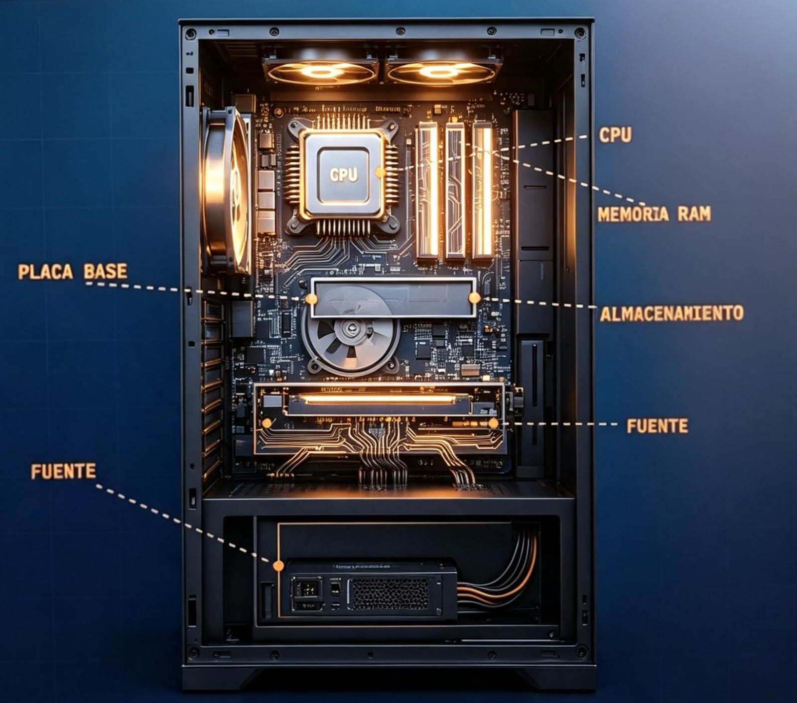

Un recorrido esquemático por las piezas que forman un ordenador, cómo se comunican entre sí y los distintos modelos que definen su diseño interno.

Cada bloque cumple una función distinta; juntos forman el sistema que procesa, guarda y comunica información.
El "cerebro" del equipo. Contiene la Unidad de Control (ALU), que ejecuta operaciones aritméticas y lógicas, y los registros, que guardan datos temporales durante el proceso.
Memoria de acceso aleatorio y volátil: guarda temporalmente los datos y programas en uso. Se borra al apagar el equipo.
Discos duros (HDD) o unidades de estado sólido (SSD) que conservan la información de forma permanente, incluso sin energía.
Conecta físicamente y permite la comunicación entre todos los componentes: CPU, memoria, almacenamiento y periféricos.
Dispositivos que permiten interactuar con el equipo: teclado y mouse (entrada), monitor e impresora (salida).
Convierte la corriente eléctrica de la toma de pared en la energía que necesitan los componentes internos para funcionar.
Toda instrucción que ejecuta un ordenador recorre el mismo ciclo, una y otra vez, millones de veces por segundo.
Transporta la información que se procesa: los valores con los que trabaja la CPU en cada instrucción.
Indica en qué posición exacta de la memoria se debe leer o escribir un dato.
Envía las señales que coordinan cuándo y cómo ocurre cada operación entre los componentes.
La forma en la que la memoria y las instrucciones se organizan da lugar a distintos modelos de arquitectura.
| Característica | CISC | RISC |
|---|---|---|
| Significado | Complex Instruction Set Computer | Reduced Instruction Set Computer |
| Instrucciones | Muchas y complejas, hacen más por ciclo | Pocas y simples, más rápidas de ejecutar |
| Ejemplo típico | Procesadores x86 (Intel, AMD) | Procesadores ARM (celulares, tablets) |